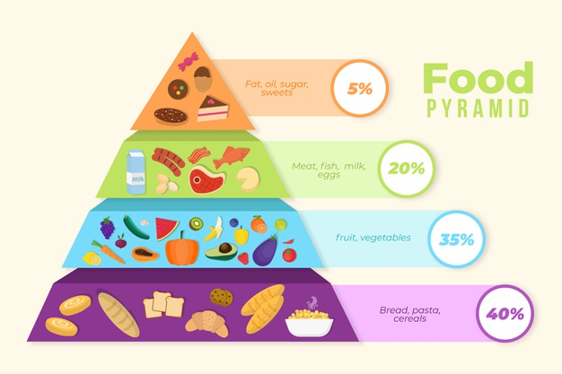

Basic Food Groups
For adequate and balanced nutrition, the foods in the following 5 basic food groups should be consumed in the recommended amount.
Milk Group
All age groups, especially adult women, children and young people, should consume this group every day.
Foods in this group:
Milk and its substitutes; dairy foods such as yoghurt, cheese, and milk powder
Important Nutrients Contained:
It is an important source of many nutrients such as protein, calcium, phosphorus, vitamin B2 (riboflavin) and vitamin B12.
Main Duties:
This group, which is rich in calcium, plays an important role in the healthy development of bones and teeth and cell work.
Adults should consume 2 servings per day, children, adolescents, pregnant and lactating women and postmenopausal women should consume 3-4 servings of milk and substitutes. One serving is a medium cup (200 cc) of milk or yogurt and two matchbox-sized cheese.
Choose skimmed or reduced-fat milk, yoghurt and low-salt cheese. Raw milk and cheese made from unpasteurized milk and similar foods cause brucellosis in humans. For this reason, do not consume milk sold on the street of unknown origin. Choose pasteurized or UHT (long-life milk) milk. Do not buy street milk sold by people whose source you do not know and do not know. Low-boiling milk does not kill all of the germs in the milk. Boiling milk too much causes vitamin loss. At least 5 minutes after the milk reaches the boiling point. Boiling can be beneficial in terms of hygiene. Straining of yogurt water or discharging the water that occurs during holding causes vitamin B2 (riboflavin) loss. Riboflavin is a vitamin that has important functions in the body. For this reason, the greenish water of yogurt should not be thrown away and should be evaluated. It should be used in fermentation of bread, making biscuits and cakes and soups. The plastic yoghurt containers purchased should not be used for food storage afterwards. Sugar should be added when the milk dessert is taken from the stove after cooking. When the sugar added during cooking and the protein of the milk combine, protein loss occurs. Tarhana is a traditional food made without yoghurt, flour or splitting. It has an important place in our diet. However, the drying process should be done in a shady place with air flow, covered with a thin clean cloth and should not be dried under the sun. Otherwise, important vitamin losses occur. Eating yoghurt and drinking salted buttermilk in the treatment of diarrhea saves lives.
Meat-Egg-Legumes Group
Foods in this group:
There are foods such as meat, chicken, fish, eggs, dried beans, chickpeas, lentils. Oily seeds such as walnuts, hazelnuts and peanuts are also included in this group.
Important Nutrients Contained:"
Contains protein, iron, zinc, phosphorus, magnesium, B6, B12, B1 and vitamin A, pulp (legumes).
Main Duties:
● They provide nutrients that play a role in cell renewal, tissue repair, and vision.
● The most important nutrients involved in blood production are provided by this group.
● Nutrients involved in the nervous, digestive system and skin health are mostly found in this group.
●It is the most important food group that has a role in gaining resistance against diseases.
Meats
● Meats are a good source of quality protein. It should be included in the diet especially during infancy and childhood, when the protein requirement increases and rapid growth occurs. Meat-chicken-fish-turkey should be consumed as much as 2-3 meatballs daily.
● Since the meat itself contains protein, it should be eaten by itself rather than its juice.
● Since fatty meats have higher saturated fat and cholesterol content, those with diseases such as coronary artery disease, diabetes, hypertension should prefer lean red meat and skinless white meat (chicken, turkey) and fish meat under the control of a dietician.
● Since its omega-3 (n-3) content is high, fish should be eaten at least twice a week for a healthy diet.
● While consuming meat products such as salami and sausages, a food rich in vitamin C and E should be included. Since these foods are high in fat, they should be consumed limitedly.
● Meats that have passed the veterinary control should be consumed. Illegally cut meats may carry disease factors and should be consumed after being cooked thoroughly.
● Methods such as boiling and grilling should be preferred in cooking, and frying should be avoided. Meat should not add fat to the meal.
● While the meat is grilled, the distance between the meat and the fire should be adjusted so that it does not burn or cause charring, otherwise cancer causing substances will form. For the same reason, meats should not be cooked at very high temperatures for a long time.
● It should be purchased from trusted places; If it will not be consumed immediately, it should be stored in a cold or freezer.
Egg
● Since its protein quality is high, it is beneficial to consume one period every day by babies and children.
● Egg is an important source of protein due to its sample protein content in diseases such as kidney and liver failure, where the amount of protein in the diet is restricted.
● Since microorganisms can easily pass to the egg from the shells, the white should be cooked and consumed well.
● Uncooked (raw) eggs should not be Cardiovascular patients can eat eggs 1-2 times a week.
● Those who do not eat meat can eat eggs as a meat option. An egg is equivalent to egg-sized meat in terms of nutritional value.
● If egg is eaten with vegetables and grains, it will not have a negative effect on blood cholesterol.
● Lecithin in egg helps regular brain functions.
● When purchasing, clean, cracked and unbroken eggs should be selected and stored in the refrigerator without washing.
● If the egg is stale and cooked for a long time, a green colored iron sulfur ring will form around the yolk. For this reason, fresh eggs should be consumed and the boiling time should be limited to 8 minutes after the water starts to boil for hard eggs..
Dry beans
● Due to its high fiber content and low fat content, it should be frequently included in the diet of cardiovascular and diabetes patients.
● Especially dried legumes are recommended to be consumed 2-3 times a week.
● It should be consumed with grains to increase protein quality.
● Gas-forming effects can be minimized by soaking and good cooking. Cooking water should never be poured.
● It should be consumed with foods rich in vitamin C in terms of the usefulness of the minerals in its composition.
Oily seeds
● Oily seeds; They are foods rich in B group vitamins, minerals, fat and protein. However, since oil seeds contain more oil than other foods, attention should be paid to their consumption amount. It is especially beneficial to include it in the diets of children and heavy workers.
● In adequate and balanced nutrition, the daily amount should be 15-20 pieces (30 gr) in hazelnuts or 5-6 pieces (30 gr) in walnuts.
● When storing at home, those with shells and shells should not be kept together and should be stored in a cool and dry environment.
Vegetable and Fruit Groups
Foods in these groups
All kinds of edible parts of the plants are gathered under the vegetable and fruit group.
Important Nutrients Contained:
They are rich in minerals and vitamins. They are rich in folic acid, beta-carotene, the precursor of vitamin A, vitamins E, C, B2, calcium, potassium, iron, magnesium, fiber and other antioxidant compounds.
Main Duties:
● They help growth and development.
● They provide cell renewal and tissue repair.
● They contain essential ingredients for skin and eye health.
● They protect the health of teeth and gums.
● They are rich in elements involved in blood production.
● They are effective in the formation of resistance against diseases.
● They provide a feeling of satiety.
● They reduce the risk of obesity and chronic diseases (cardiovascular diseases, hypertension, some types of cancer) due to unbalanced nutrition.
All vegetables and fruits are recommended to consume at least 5 portions of fruit and vegetables in their season, when they are abundant and cheap, in terms of nutritional value and being economical.
For example ;
1 serving of fruit = 1 medium apple or 1 medium orange or 1 large tangerine
1 serving of vegetables = 4-5 tablespoons of vegetable meal or 1 bowl of salad
Bread and Cereal Group
Foods in this group
Cereal grains such as wheat, rice, corn, rye and oats and flour, bulgur, cracked wheat and similar products are included in this group.
Important Nutrients Contained and Its Main Tasks:
Cereal and cereal products are important nutrients for health, as they contain vitamins, minerals, carbohydrates (starch, fiber) and other nutrients. Cereals also contain protein. Although the quality of this protein is low, protein quality can be increased when consumed together with legumes or foods such as meat, milk and eggs. Cereals also contain some oil. The oil of cereal grains is rich in vitamin E. There is almost no vitamin C in cereals, with elements that show vitamin A activity. Grains are rich in B group vitamins other than B12, especially the best source of vitamin B1 (thiamine). These vitamins are mostly found in the shell and core of cereal grains and are rich in minerals and vitamins. They are rich in folic acid, beta-carotene, the precursor of vitamin A, vitamins E, C, B2, calcium, potassium, iron, magnesium, fiber and other antioxidant compounds.
Recommendations for the Bread and Grain Group
● Consume whole grain products.
● The amount to be consumed depends on the weight and physical work status of the individual. While 3 thin slices of bread (75 g) per day is sufficient for individuals with low activity and fat, weak individuals and those who work in heavy work can eat 3-5 times this amount.
● Whole grain products can be consumed 6 servings a day (such as 6 slices of bread or 3 slices of bread, 1 scoop of flour soup, 4 tablespoons of rice). Those who work hard and need more energy can consume more than this group.
● Consume it with other foods (legumes, milk and products) to increase protein and vitamin content.
Get on top